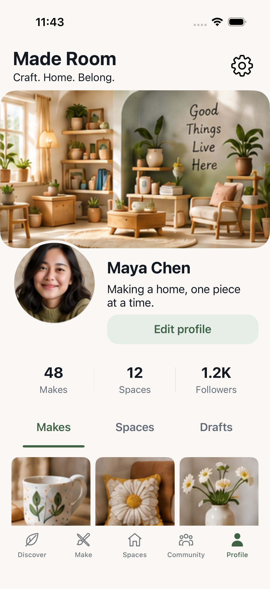
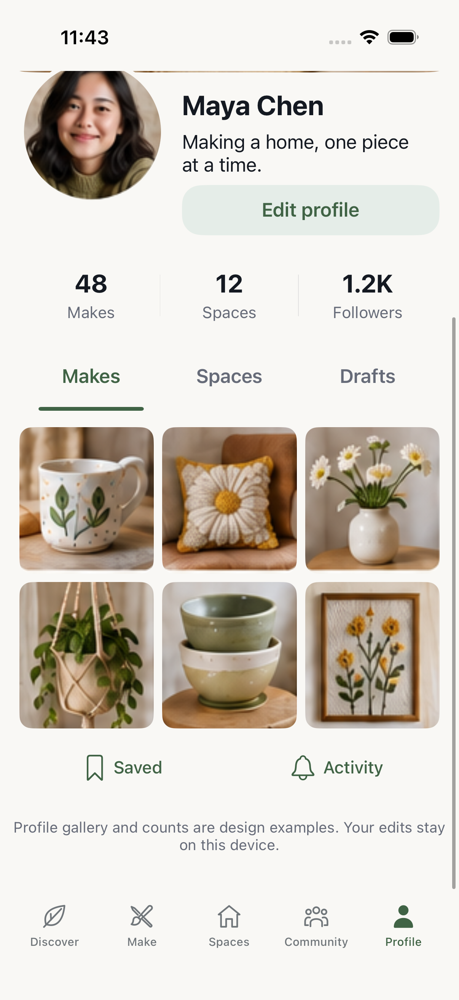
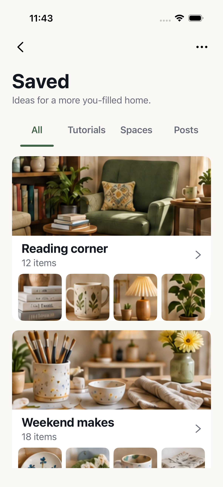
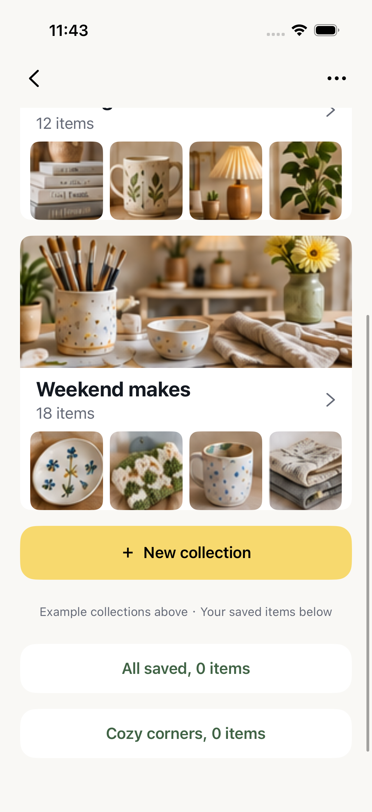
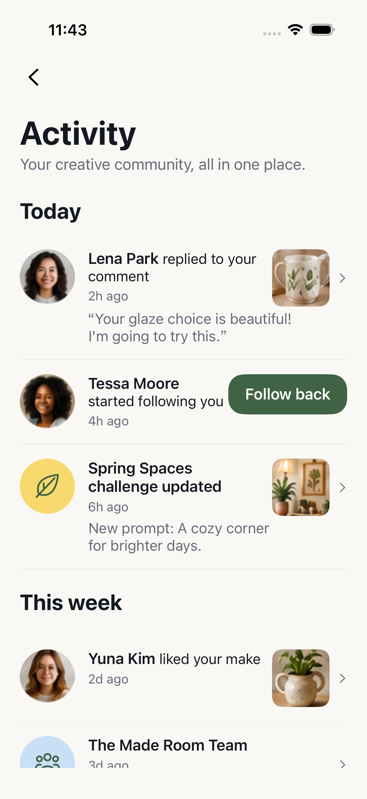
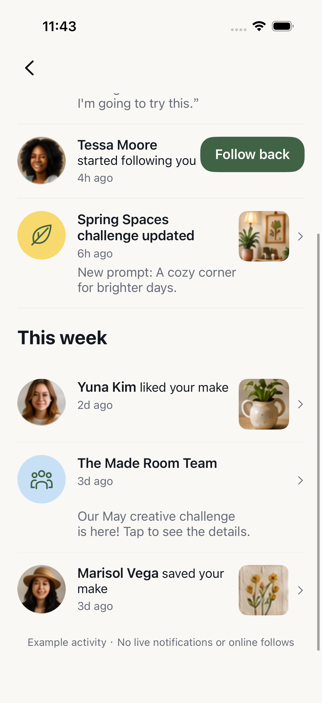
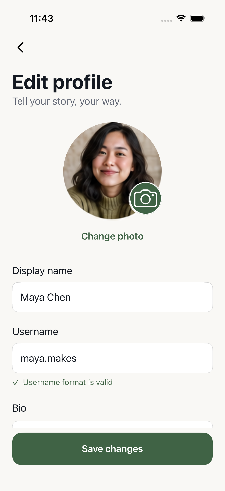
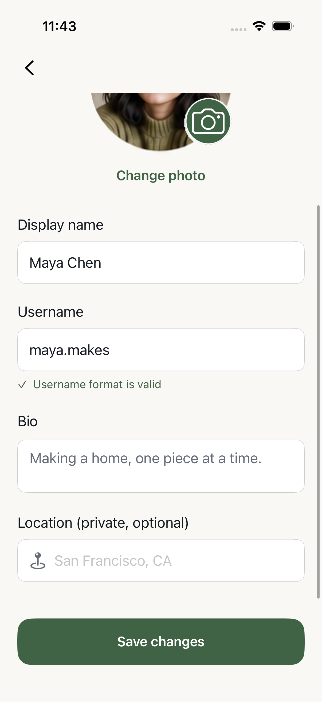

P01 / Profile



Reference: review-v1.html, board 07-profile-v2. All right-hand images are actual simulator screenshots. Only content photographs are image assets; labels, forms, buttons and lists are UIKit views.
The source canvas is narrower and taller than iPhone 17 Pro. Source proportions are preserved with scrolling. P02/P03 retain Back controls; P04 has a pinned Save button. Example counts, galleries, collections and activity are labelled as local design previews. Username validation checks format only.










